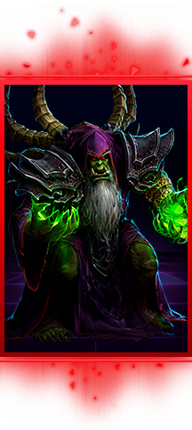
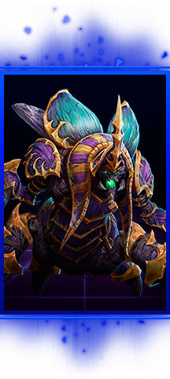
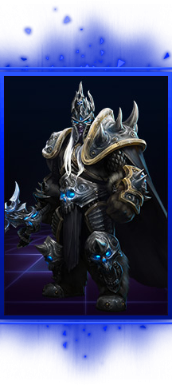
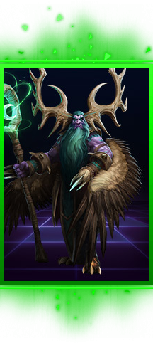
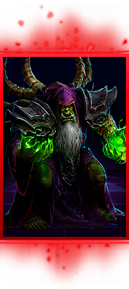
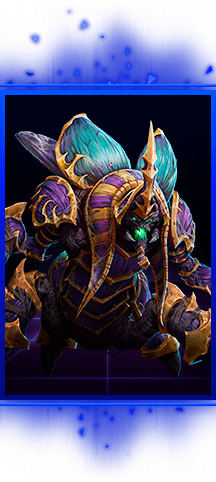
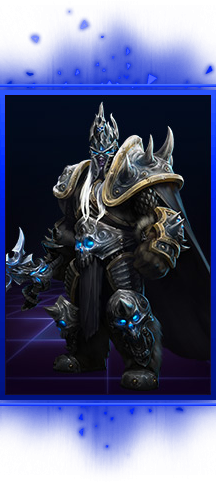
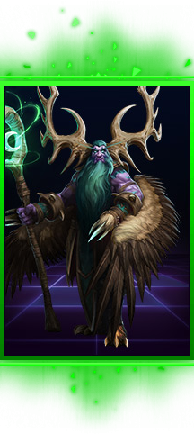
Патч Дивы. Последнее обновление: 10.06.2017
Tier 1 - "Заверните мне два"
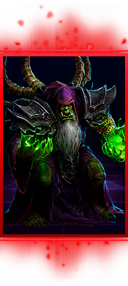
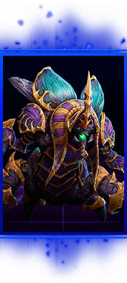
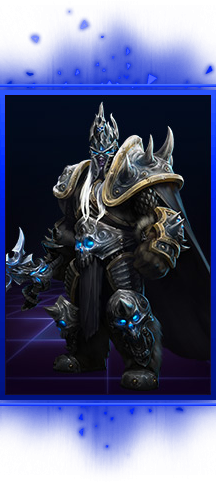
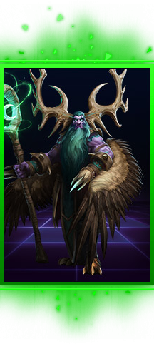
Tier 2 - "Cледующая остановка ГМЛ"
.") 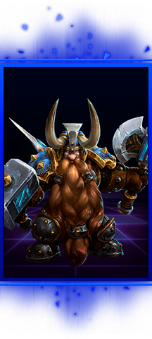
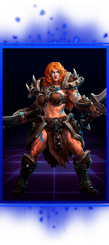
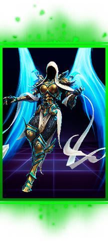
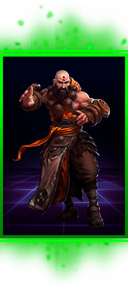
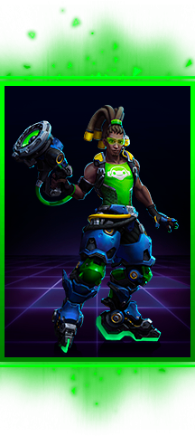
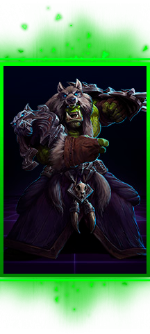
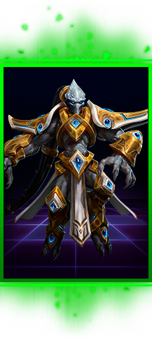
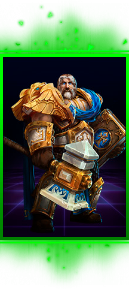
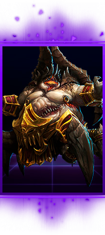
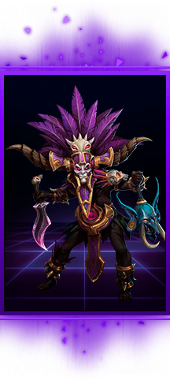
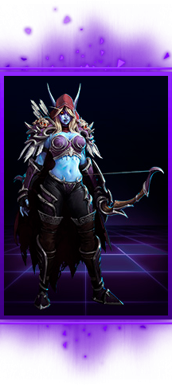
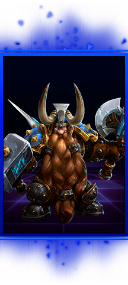
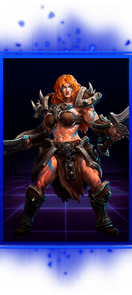
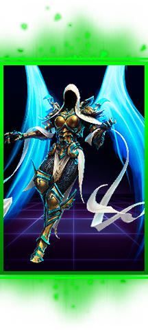
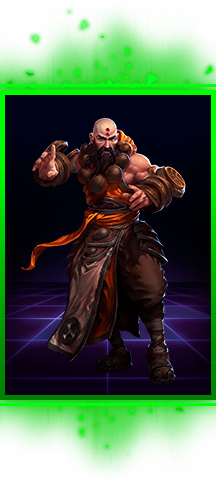
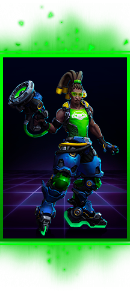
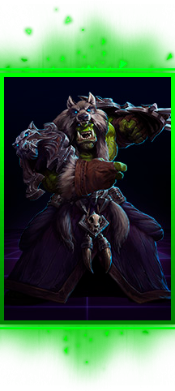
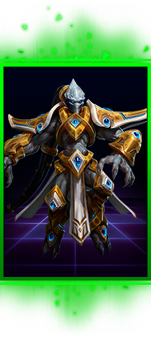
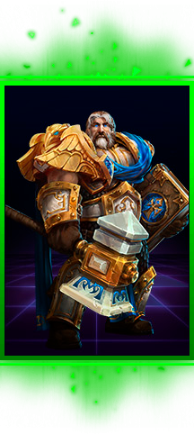
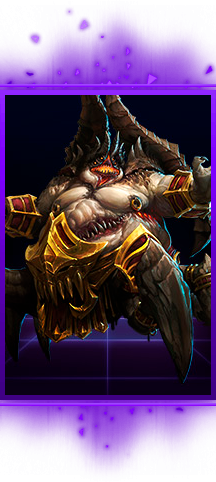
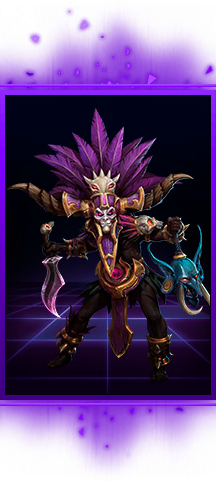
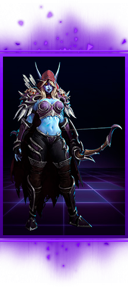
Tier 3 - "У нас всё нормально"
.
Твоя эффективность на героя прямо пропорциональна тому как часто ты попадаешь спелами по героям. Скилл кап высокий.
Уязвима к танкам с сильным чейс-потенциалом, а также танкам с антимагией (Анубарак, Тираель, Стежок).
Уязвима к мобильным прыгучим ассасинам (Зератул, Генджи, Трейсер).") 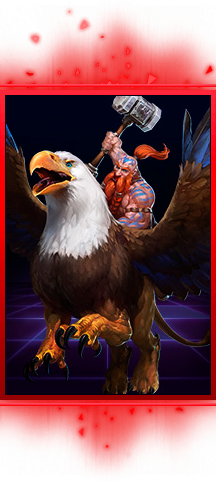
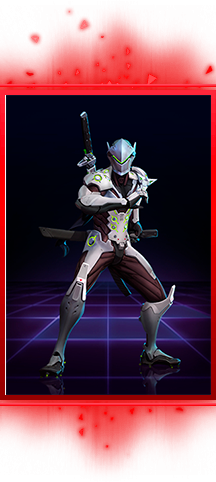
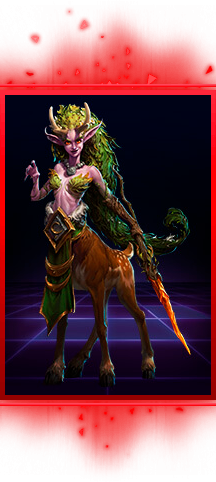
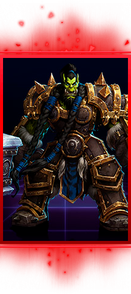
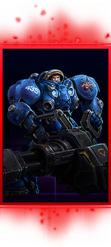
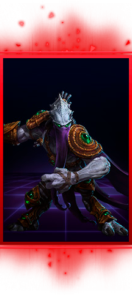
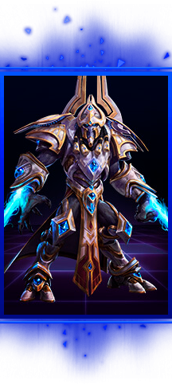
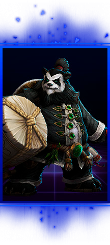
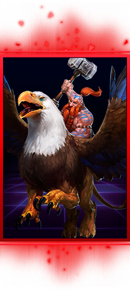
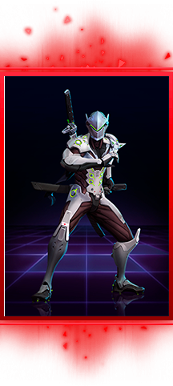
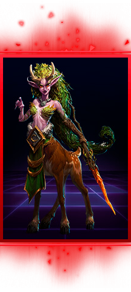
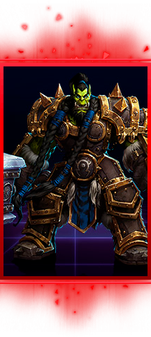
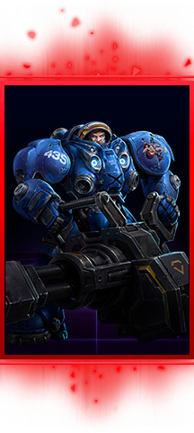
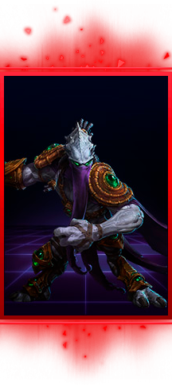
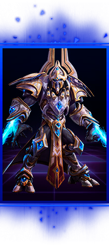
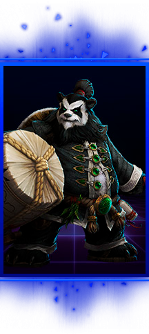
 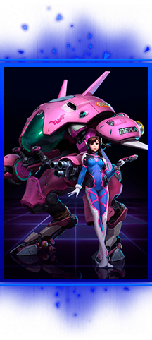
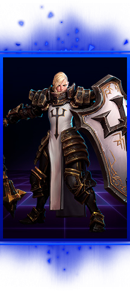
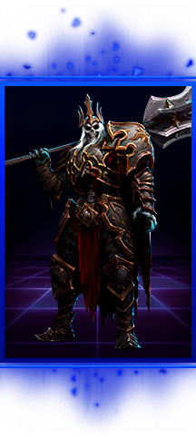
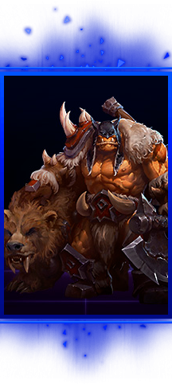
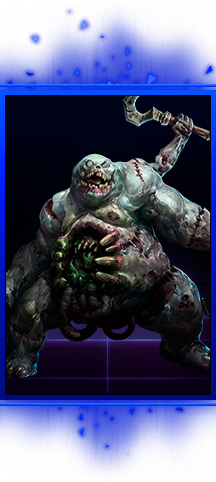
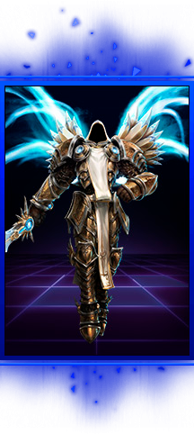
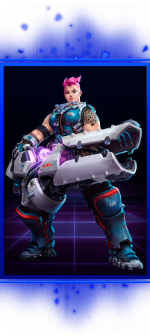
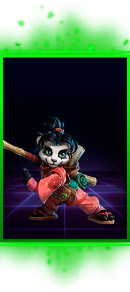
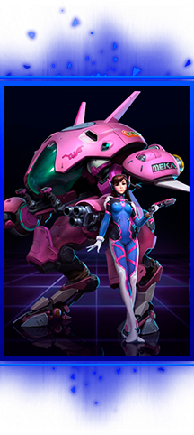
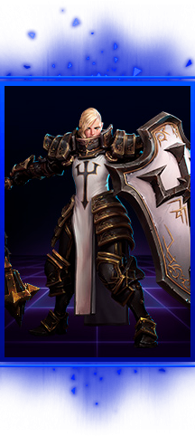
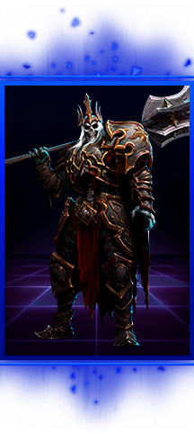
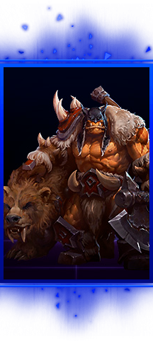
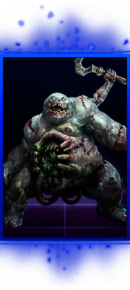
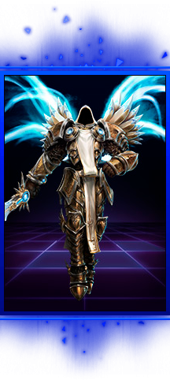
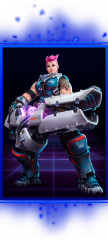
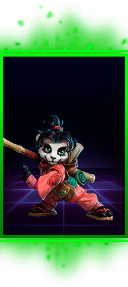
 либо с сильными брузерами (Артас, Соня).") 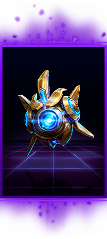
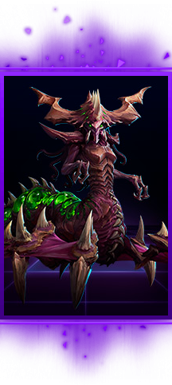
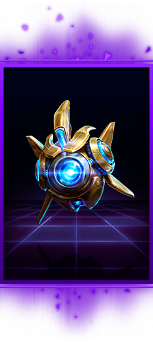
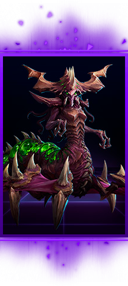
Tier 4 - "Хьюстон, у нас проблемы"
.
Кроме того страдает если вокруг много крипов, жуков или других спавн юнитов.
Имеет проблемы с маной, а также в талантах до 7го уровня у неё ничего не происходит.") 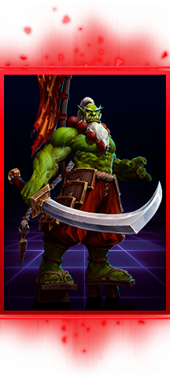
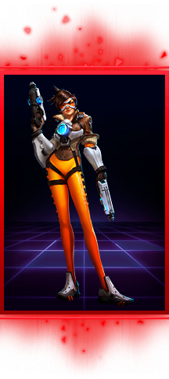
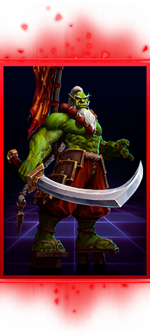
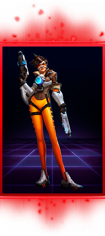
.
Не самостоятельная. Требует постоянной поддержки от всей команды, особенно саппорта.") 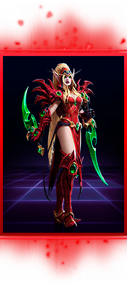
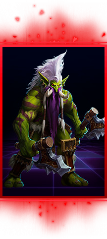
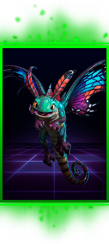
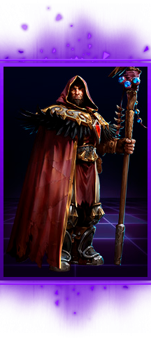
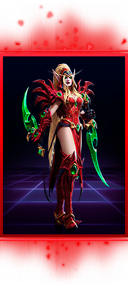
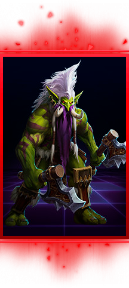
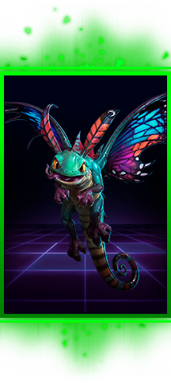
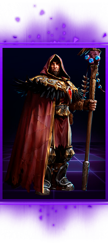
Tier 5 - "Всё очень плохо"